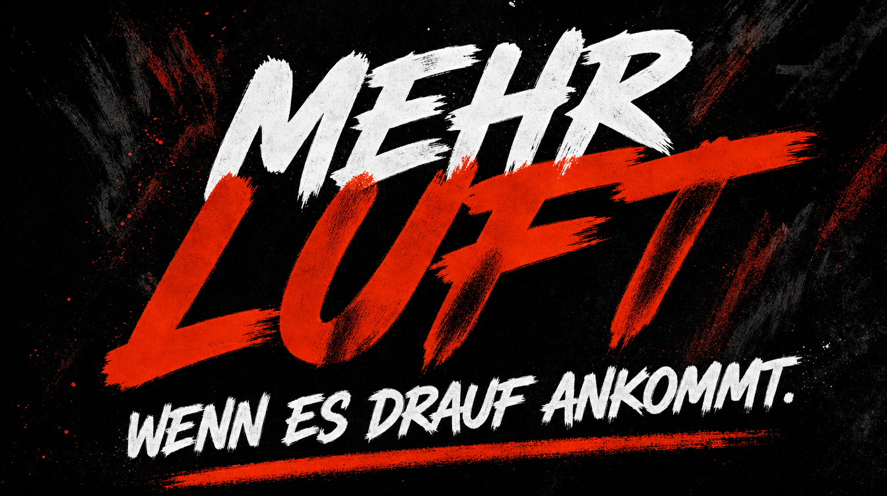
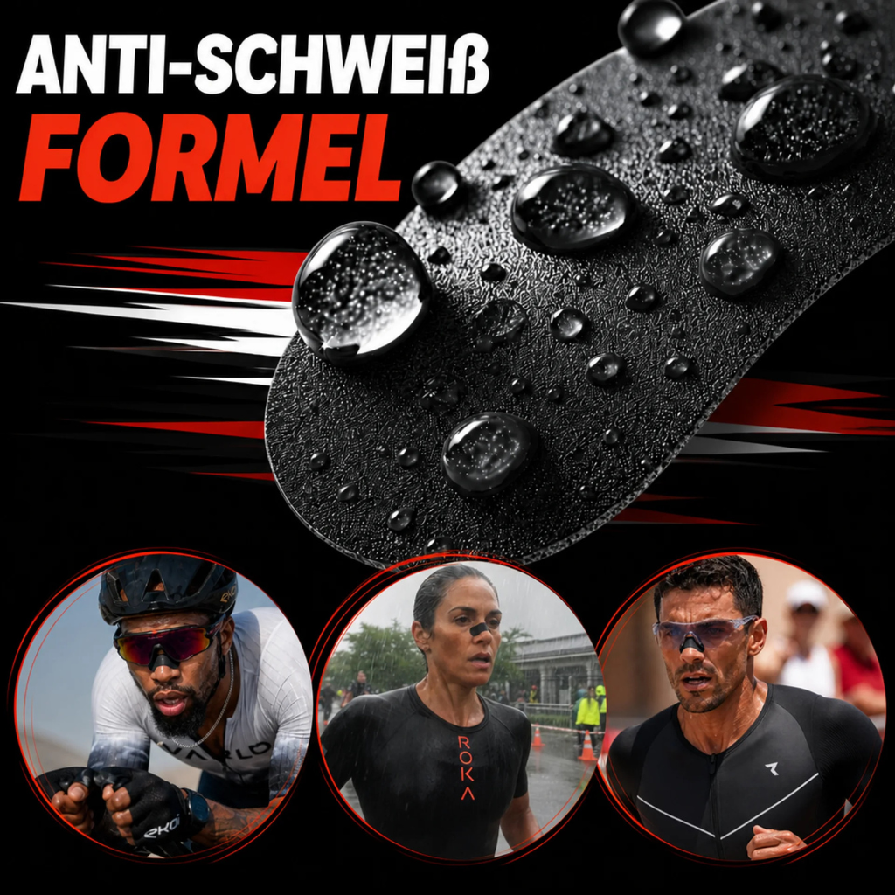
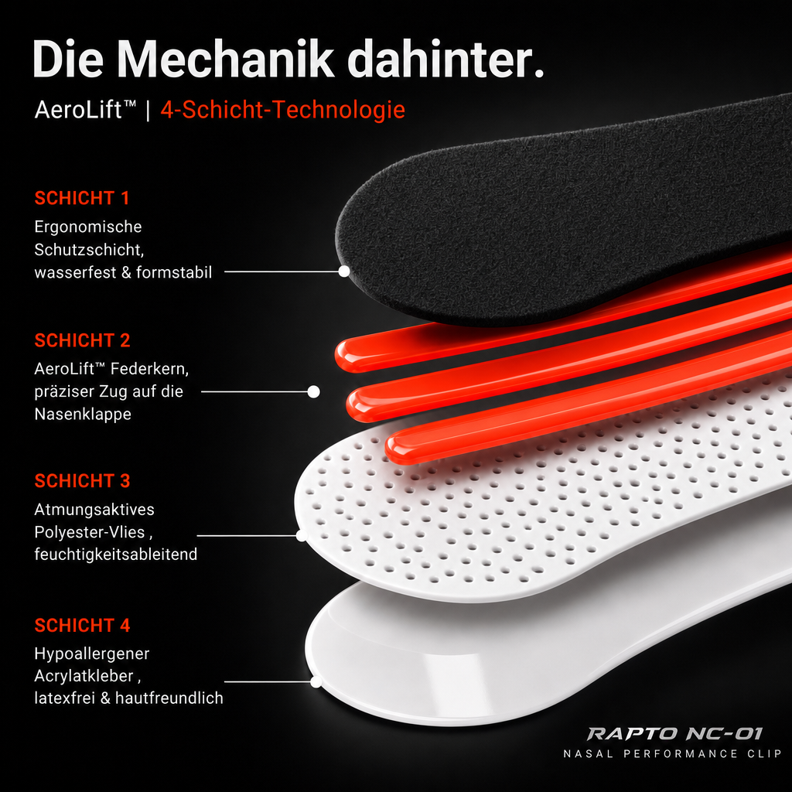
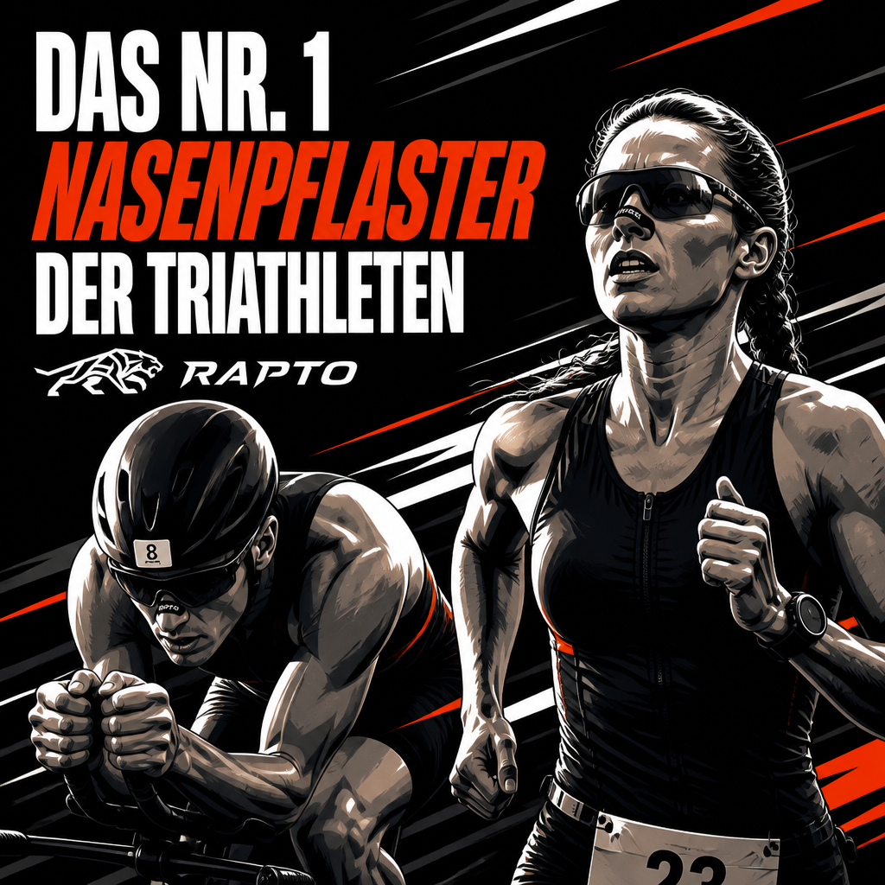
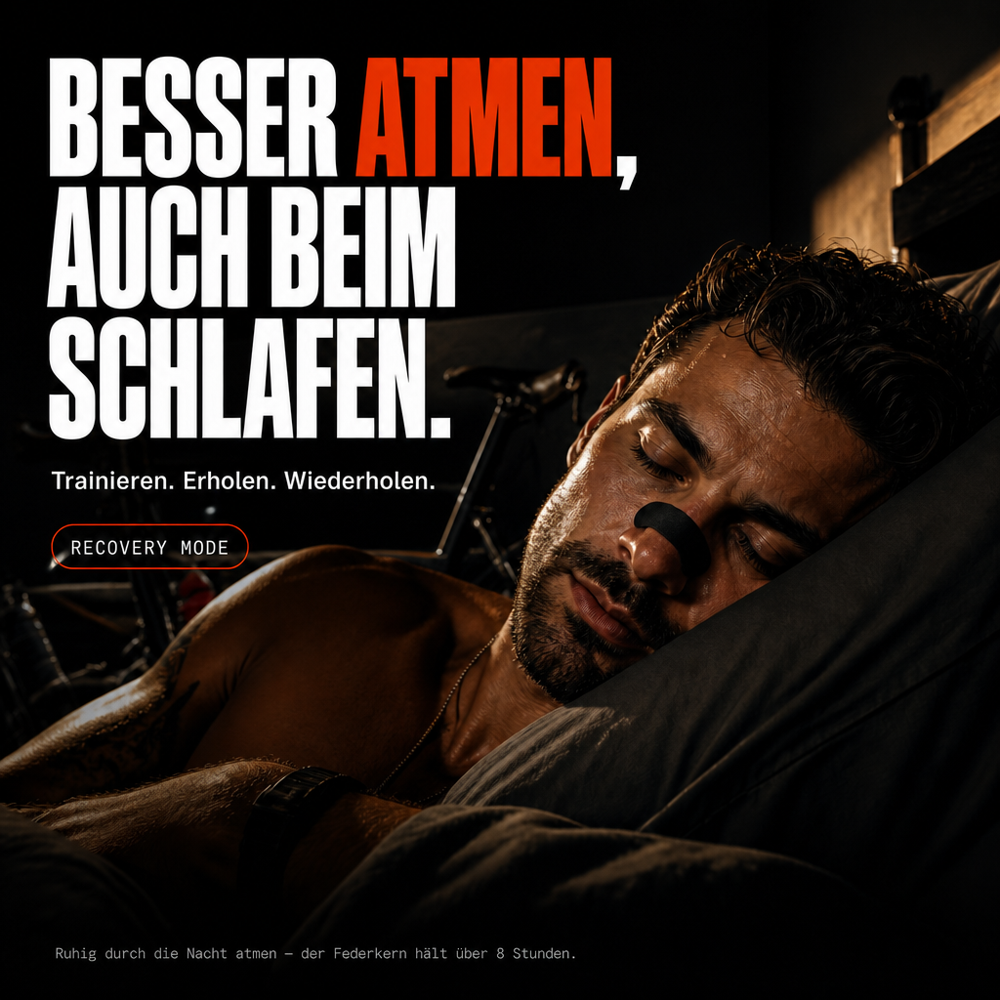
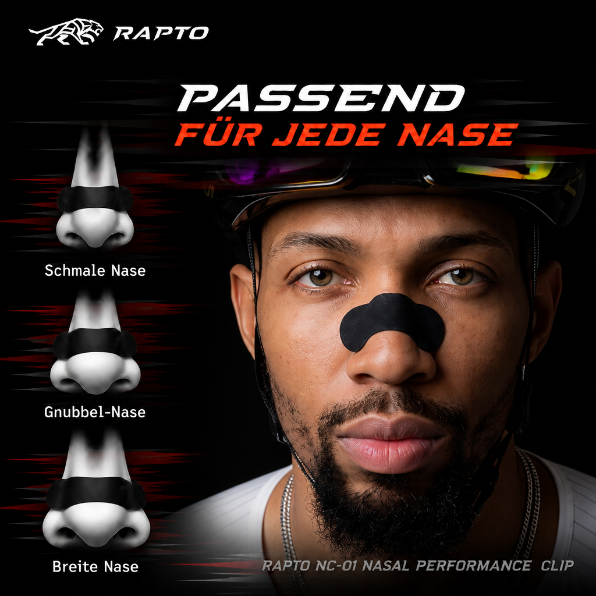
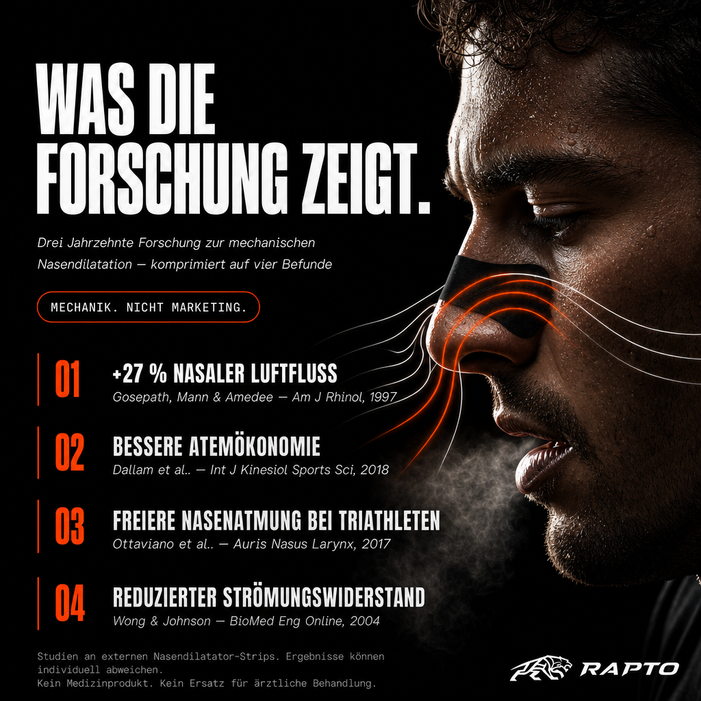
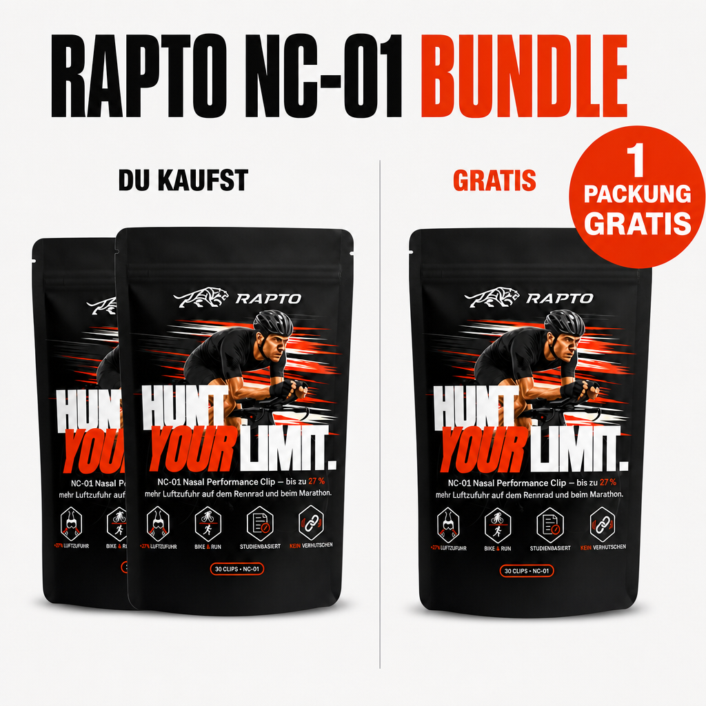

1 Packung
30 Strips · Zum Testen
23,99 €
AuswählenNC-01 NASAL PERFORMANCE CLIP

Mechanische Öffnung der Nasenklappe für im Schnitt 27 % mehr nasalen Luftfluss1. Entwickelt für Rennrad, Lauf und Triathlon.
30 TAGE RISIKOFREI TESTENSTUDIENBASIERT · LATEXFREI · HÄLT ÜBER 8 STUNDEN
Die meisten Strips versagen beim ersten Schweiß. Der NC-01 nutzt eine extra-breite Klebefläche, gebaut für Schweiß, Regen und harte Einheiten — über 8 Stunden, ohne Nachjustieren.
SCHLUSS MIT ABRUTSCHENDEN STRIPS
Kein Marketing-Versprechen. Sieh selbst.
Der NC-01 stabilisiert die Nasenklappe mechanisch — damit die Luft genau dann durch die Nase strömt, wenn du sie am dringendsten brauchst. Der AeroLift™ Federkern zieht den vorderen Nasenraum auf und hält ihn offen. Eine klinische Messung an externen Nasendilatatoren zeigte einen durchschnittlichen Luftfluss-Anstieg von rund 27 %1.
SPÜR DEN UNTERSCHIED
Je härter die Einheit, desto eher übernimmt die Mundatmung. Der NC-01 hält die Nasenklappe offen, damit du länger kontrolliert durch die Nase atmest. In einer Studie an Triathleten verbesserte ein Nasendilatator die wahrgenommene Nasenatmung unter Belastung2. Bei Läufern ist Nasenatmung mit besserer Atemökonomie verbunden3.
FÜR DEINE NÄCHSTE DISTANZ
Erholung ist Teil des Trainings. Der NC-01 hält die Nasenatmung auch nachts offen — ruhig durch die Nase atmen statt trockenen Mund am Morgen.
RECOVERY OPTIMIEREN
Acrylatkleber, latexfrei und für sensible Haut entwickelt. Hält bei Schweiß — und lässt sich mit Wasser und Seife rückstandslos ablösen. Kein Brennen, keine Rötung.
FÜHL DEN UNTERSCHIED
Keine erfundenen Sternebewertungen, keine gekauften Influencer. Stattdessen: vier unabhängige Studien, ein offengelegter 4-Schicht-Aufbau und ein Eisbad-Test. Plus 30 Tage Geld-zurück-Garantie, wenn der NC-01 nicht hält.

Schweiß ist der Härtetest für jeden Nasenstrip — und der Moment, in dem die meisten versagen. Der Unterschied beginnt beim Kleber: Der NC-01 nutzt einen Acrylatkleber, ausgelegt für einen kompletten Langdistanz-Renntag — über 8 Stunden, durch Regen und harte Einheiten. Genau dann, wenn andere nachgeben.

Links im Bild: eine durchgehende Auflagefläche, die den Zug des Federkerns großflächig auf der Haut verankert. Rechts schmale Pads, die nur punktuell greifen.
Der Acrylatkleber ist für lange Renntage ausgelegt. Er hält bei Schweiß und Regen, wo sich andere Strips schon nach den ersten Kilometern lösen.
Zieht die Nasenklappe aktiv auf und hält sie offen, statt nur auf der Nase zu kleben, ohne spürbaren Effekt.
Die Wirkung externer Nasendilatatoren ist in unabhängigen Studien gemessen1–3 — keine Marketing-Behauptung.
Der Unterschied liegt nicht im Versprechen, sondern im Aufbau: breitere Klebefläche, stärkerer Kleber, mechanischer Federkern.
Eine Packung enthält 30 Strips. Je größer das Bundle, desto mehr Gratis-Packungen — und desto günstiger pro Strip.
30 Strips · Zum Testen
23,99 €
Auswählen
2 kaufen + 1 gratis
45,90 €
Auswählen3 kaufen + 3 gratis
69,85 €
Sichern30 Tage Geld-zurück-Garantie. Risikofrei testen.
Über 8 Stunden — auch bei Schweiß und Regen. Die extra-breite Klebefläche ist für harte Einheiten gebaut, ohne Nachjustieren.
Ja. Die flexible Form passt sich schmalen, runden und breiten Nasen an — der AeroLift™ Federkern arbeitet unabhängig von der Nasenform.
Nein. Der NC-01 ist ein Sport-Performance-Produkt, kein Medizinprodukt und kein Ersatz für ärztliche Behandlung.
Vier Schichten: ergonomische Schutzschicht, AeroLift™ Federkern, atmungsaktives Polyester-Vlies und latexfreier Acrylatkleber.
Die Klebefläche ist schweiß- und wasserresistent — im Eisbad-Test hält der Strip auch mit dem Kopf unter Wasser.
Ja, 30 Tage Geld-zurück-Garantie. Wenn der NC-01 nicht hält, was das Video zeigt, bekommst du dein Geld zurück.